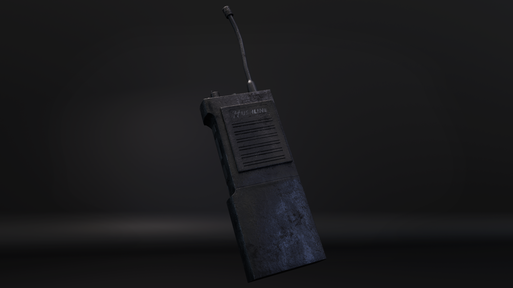
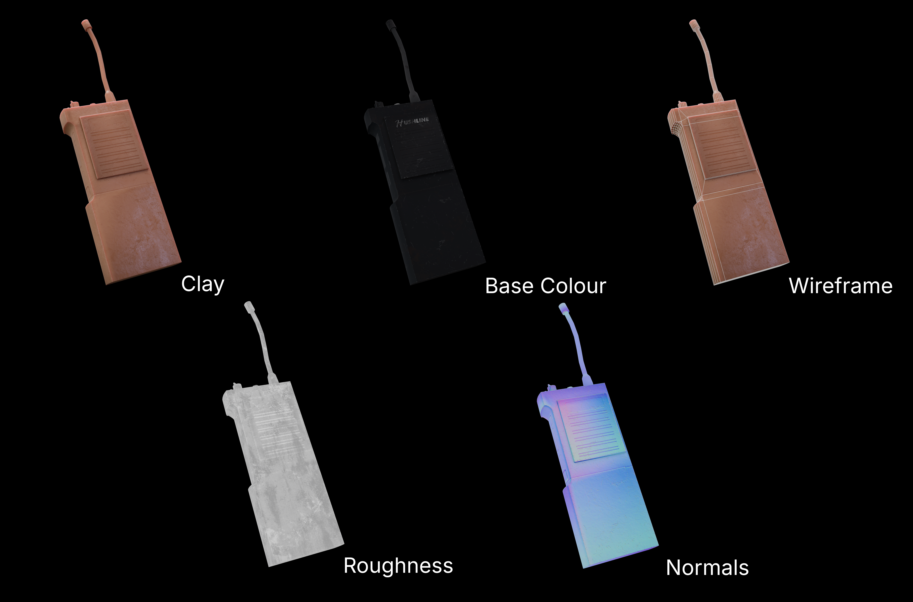

Prop Art — Environment
Radio
A real-time prop created for Please Wave Back VR, with materials designed to be read clearly at close viewing.
Overview
Created for Please Wave Back VR, this radio was modelled and textured as a game-ready prop for a standalone VR experience. The workflow focused on a clear silhouette, readable material definition and useful surface detail at close headset distances, while keeping the asset suitable for real-time use in Unity 6.
"A VR-ready prop built to balance close-range visual quality with real-time performance."
Radio Gallery
Selected renders of the finished radio prop.

Technical breakdown
Technical breakdowns covering modelling, UVs, materials, texturing, optimisation and real-time presentation.

Wireframe
The wireframe view shows how the radio's forms are built into a clean, readable silhouette. Geometry and shape definition are designed to hold up under close inspection while remaining suitable for a real-time VR environment. Most of the fine surface detail is captured through baking the high-poly model into a normal map.

Texture Sets
This breakdown shows the base colour, normal and roughness maps alongside a clay render. The normal map adds surface definition, while roughness controls how broadly or sharply light reflects from each material. Deliberate roughness variation is essential for distinguishing surfaces and creating a convincing, realistic finish in real-time lighting.